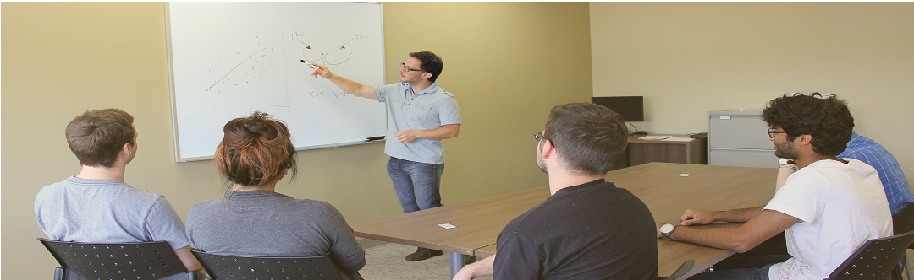

Students
Interested in Studying at CANdiLab?
CANdiLab has several full-time employees, however much of the research undertaken in the lab is performed by students at the undergraduate, graduate and post-doctoral level. CANdiLab offers students access to cutting-edge technology in a dynamic research environment that aims to push the limits of current neuroscience knowledge. If you’re interested in applying to study within CANdiLab, please read about expectation re academic standing, and guidelines regarding the application process.
Undergraduate Students

CANdiLab offers valuable research experience for undergraduate students at both of their research sites. Undergraduate students can expect to gain hands-on experience with some of the latest research technology, and to gain a valuable introduction into study design and methods, statistical analyses, and research process. For more details, including information on applying for an undergraduate volunteership, please click here.
Graduate Students
As a top site for clinical neuroscience research, CANdiLab welcomes applications from the best and brightest students across Canada, the U.S., and abroad. CANdiLab students enroll for graduate studies through the University of Ontario Institute of Technology’s Health Sciences program, and study directly under Dr. Shane at the Masters and/or PhD level. As CANdiLab research projects tend to straddle the line between psychological and neuroimaging disciples, students with experience and interests in both areas tend to excel in the lab. For more details, including information on applying for graduate studies
Post-doctoral Fellows
CANdiLab also hosts research positions for top Post-doctoral Fellows looking to expand their research portfolio prior to applying for faculty positions. Most Post-doctoral positions are for two-year terms, however other arrangements have been made for qualifying applicants. Fellows coming in with their own external funding would be particularly welcome to apply. For more details, including information on applying for a Post-doctoral Fellowship in CANdiLab,